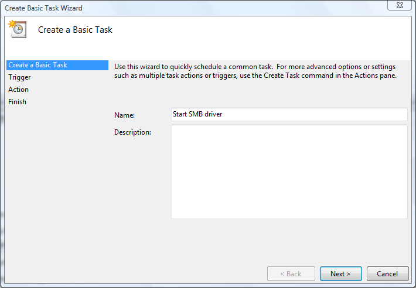
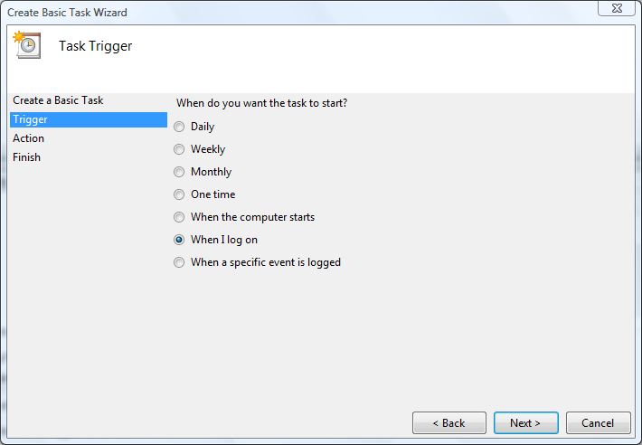
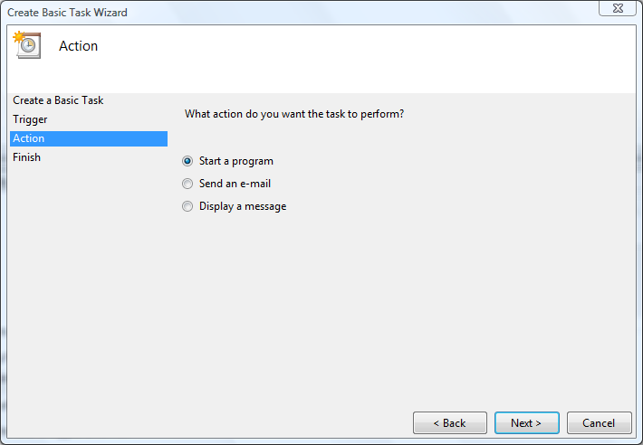
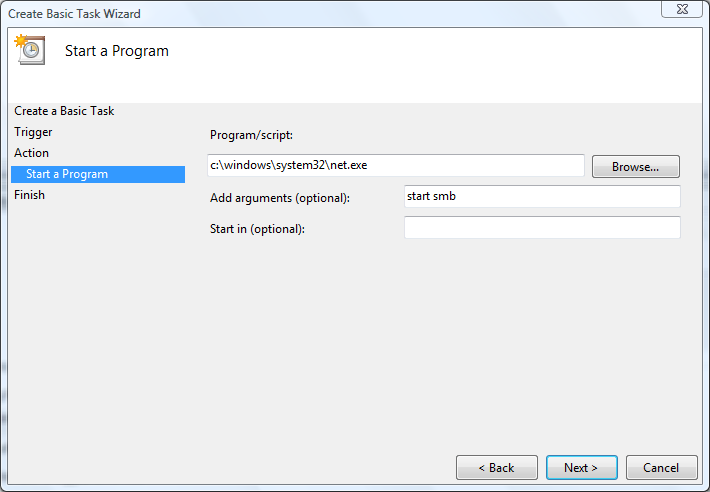
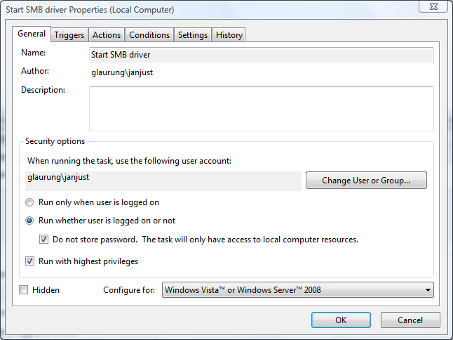
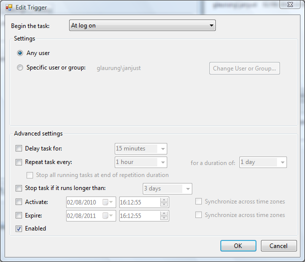
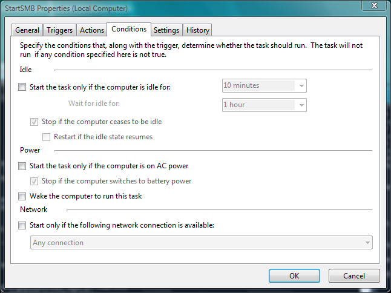

Enter the name of the task, e.g. Start SMB driver and click Next.

and click Next.

Select the entry Start a program and click Next.

- The Program is '
c:\windows\system32\net.exe' - The Arguments are '
start smb'

and then click Finish.

Do NOT click 'OK' just yet, but go to the 'Triggers' tab, then double-click the 'At log on' trigger to edit it.

then go to the 'Conditions' tab:

and then click OK.